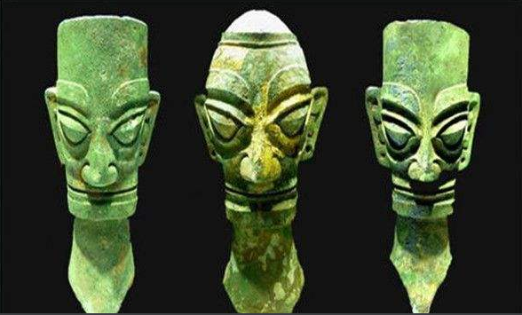
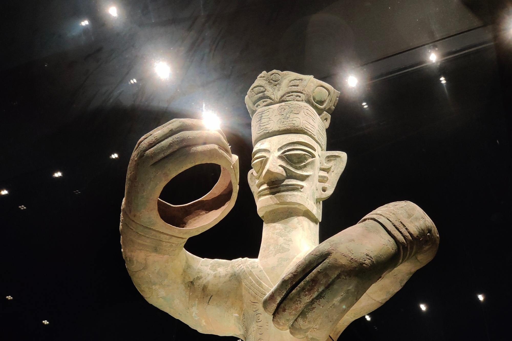
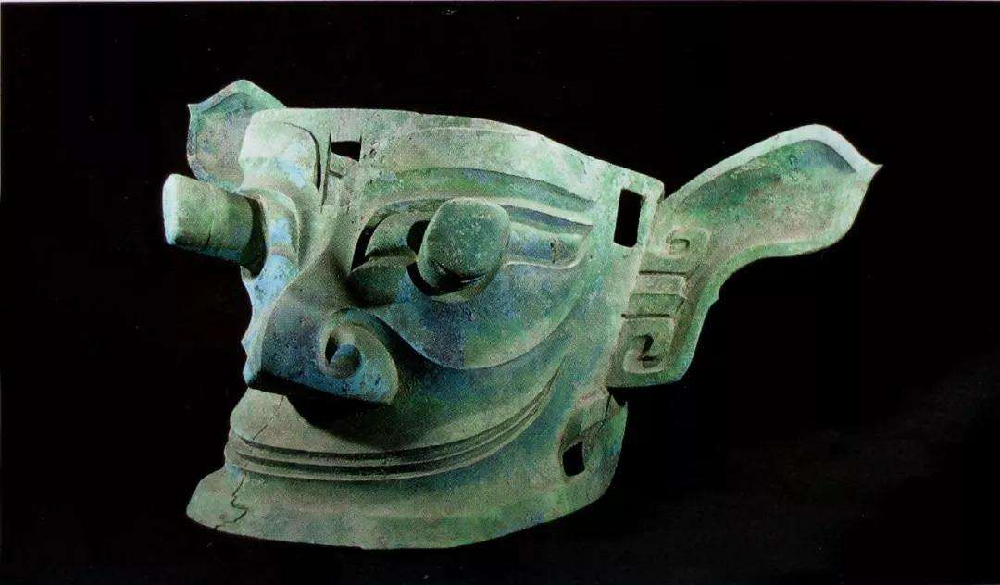
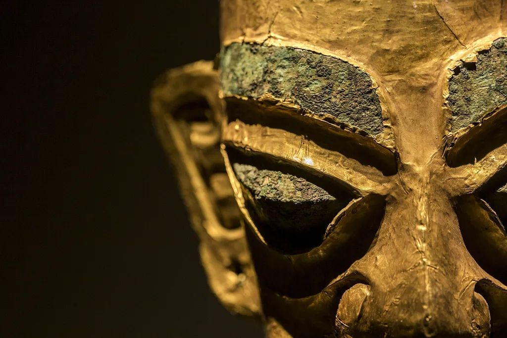
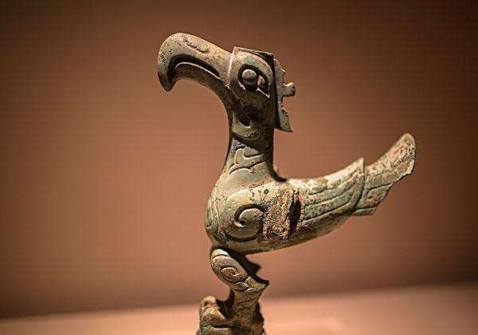
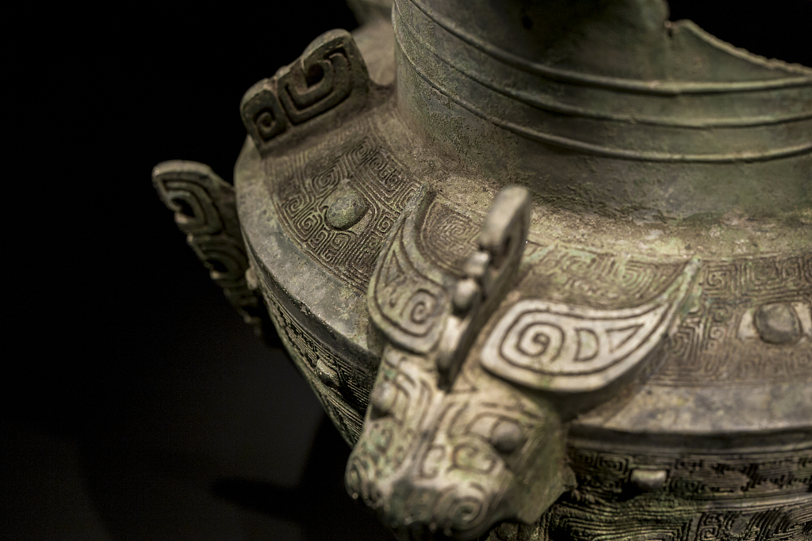

三星堆文�?



三星堆位于四川省广汉市三星堆镇�?1980年至1981年间考古学界把三星堆遗址�?二期起连�?几期文化遗存称为三星堆文化，其文化年代下限存在争�?�? 三星堆文化基�?1933年至1980年�?1981年的若干次考古调查和发掘所获资料，以及�?1980年以后的多�?�发掘中，三星堆遗址考古获得了更加丰富的资料，极大地丰富了三星堆文化的内涵�? 三星堆遗址古文化在四川地区分布较广，又具有一群区�?于其他任何考古学文化的特殊器型，发掘者将这一考古学文化命名为“三星堆文化”�? 三星堆文化研究涉及面极广，在考古学、历史�?�、民族�?�、文化�?�、艺�?以及�?然�?��?�等领域都有不少学者加入研究�?�列，在各个方面都取得了重�?�进展，新成果不�?�?世，同时在一些主要问题上也存在不少分歧�? 考古认为三星堆文化可能是夏文化与三峡地区土著文化联盟进入成都平原征服当地原有文化后形成的�? 三星堆文化是夏人的一�?从黄河中游经陕西西迁成都平原、征服当地土著文化后形成的，同时西迁的还有鄂西川东峡区的土著民族。三星堆文化�?以�?�是以�?�文化和鄂西川东峡区土著文化的联盟为主体的考古学文化�? 通过鄂西地区、三峡地区这样的传播�?线进入了四川盆地�?心的成都平原，在当地相当发达的土著文化的基�?�上，形成了三星堆文化。以后的二里岗期商文化也�?通过这样的传�?�?线与三星堆文化发生联系�? 三星堆文化面貌构成中，除夏文化因素的主体地位外，来自鄂西川东峡区的文化传统也占有很重要的地位，这一点特�?在陶器文化层�?上反映更加突出�?


